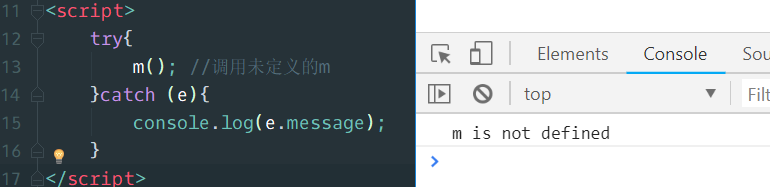

JavaScript高级
一、介绍 (了解)
1.1 什么是JavaScript
JavaScript 是一门解释型的、弱类型的、基于原型的编程语言。
编程语言可以分为两大种：
- 编译型的：先翻译好，再执行。
- 解释型的：翻译一句，执行一句。
弱类型：数据类型是由值来决定的。
原型：后面解释
JavaScript被认为是客户端“脚本”，它不常叫“语言”，言外之意是比较简单，但是深入了解之后，你会发现 简单的外表下，蕴藏着丰富的内涵。
1.2 JavaScript 历史
JavaScript问世：
上世纪90年代，NetScape(网景)公司研发的NetScape Navigator1.0(浏览器)成为当时最热门的浏览器。

市场份额一举超过90%。
Netscape公司很快发现，Navigator浏览器需要一种可以嵌入网页的脚本语言，用来控制浏览器行为。当时，网速很慢而且上网费很贵，有些操作不宜在服务器端完成。比如，如果用户忘记填写“用户名”，就点了“发送”按钮，到服务器再发现这一点就有点太晚了，最好能在用户发出数据之前，就告诉用户“请填写用户名”。这就需要在网页中嵌入小程序，让浏览器检查每一栏是否都填写了。
1995年，Netscape公司雇佣了程序员Brendan Eich（布兰登·艾奇）开发这种网页脚本语言，JavaScript1.0。
1996年3月，Navigator 2.0浏览器正式内置了JavaScript脚本语言。
“邪恶”的后来者
因为 JavaScript1.0 如此成功，所以微软·也决定进军浏览器，1996年8月，微软模仿JavaScript开发了一种相近的语言，取名为JScript（JavaScript是Netscape的注册商标，微软不能用），首先内置于IE 3.0。Netscape公司面临丧失浏览器脚本语言的主导权的局面。
标准的重要
在微软进入后，有 3 种不同的 JavaScript 版本同时存在：NetscapeNavigator 3.0 中的 JavaScript、IE 中的 JScript 以及 CEnvi 中的 ScriptEase。与 C 和其他编程语言不同的是， JavaScript 并没有一个标准来统一其语法或特性，而这 3 种不同的版本恰恰突出了这个问题。 随着业界担心的增加，这个语言标准化显然已经势在必行。
JavaScript标准化
1996年11月，Netscape公司决定将JavaScript提交给国际标准化组织ECMA（European Computer Manufacturers Association欧洲计算机制造商协会），希望JavaScript能够成为国际标准，以此抵抗微软。1997年7月，ECMA组织发布262号标准文件（ECMA-262）的第一版，规定了浏览器脚本语言的标准，并将这种语言称为ECMAScript。这个版本就是==ECMAScript== 1.0版。
目前最新的ECMAScript版本是ES6，我们学习的是ES5版本，因为ES6中好多新的内容在 IE11 中都不能使用。
1.3 JavaScript组成部分

ECMAScript，核心语法
DOM （Document Object Model）,==文档对象模型==。提供了操作网页内容的一系列工具（api）。
BOM （Browser Object Model）,==浏览器对象模型==。提供了操作浏览器的一系列工具（api）。
1.4 JavaScript的应用
① 数据验证（表单验证）
② 网页特效（目前大多数的网页特效都是通过JS编写）
③ 编写网页小游戏
④ 服务器端编程，数据交互（Ajax、Node.js）
二、语句和表达式（了解）
JavaScript程序的执行单位为行（line），也就是一行一行地执行。一般情况下，每一行就是一个语句。
语句（statement）是为了完成某种任务而进行的操作，比如下面就是一行赋值语句：
1 | var a = 1 + 3; |
这条语句先用var命令，声明了变量a，然后将1 + 3的运算结果赋值给变量a。
1 + 3叫做表达式（expression），指一个为了得到返回值的计算式。
语句和表达式的区别在于，前者主要为了进行某种操作，一般情况下不需要返回值；后者则是为了得到返回值，一定会返回一个值。
凡是JavaScript语言中预期为值的地方，都可以使用表达式。比如，赋值语句的等号右边，预期是一个值，因此可以放置各种表达式。一条语句可以包含多个表达式。
小提示：可以认为含有等号（=）的是语句，没有等号（=）的是表达式。
语句以分号结尾，一个分号就表示一个语句结束。多个语句可以写在一行内。
1 | var a = 1 + 3 ; var b = 'abc'; |
分号前面可以没有任何内容，JavaScript引擎将其视为空语句。
1 | ;;; |
上面的代码就表示3个空语句。
三、==变量==（重点）
1、命名规则
变量必须以字母开头
变量也能以 $ 和 _ 符号开头（不过我们不推荐这么做）
变量名称对大小写敏感（y 和 Y 是不同的变量）
变量不能使用保留字和关键字（尤其不要使用==this==, ==name==这样的东西）
1
2
3
4
5
6
7var $ = 1; //可以，但是不推荐这样用
function $(){ //可以，但是不推荐这么用
}
//不推荐的原因是，jQuery中用$表示jQuery对象，已经把$占用了，如果我们自己声明的变量也叫做$，会和jQuery发生冲突。
2、一条语句，多个变量
在一行中，可以声明多个变量，==注意每个变量之间是逗号==（,）。
console.log(); 表示在浏览器的控制台进行输出，console.log()一次性可以输出多个变量，而且变量的数据类型也能够体现。后面的学习中，用console.log() 代替 document.write() 和 alert().
1 | var a = 1, b = 2, c = 'hello'; //在一行中，使用一个var声明三个变量 |

3、只声明变量，没有赋初值
1 | var e; |
4、重新声明变量
重新声明变量，但是没有给值的话，还使用原来的变量。这点和PHP是一样的。
1 | var g = 1; //声明变量 |
5、变量提升（注意）
变量提升（hoisting）
1 | console.log(h); |
实际上JavaScript在解释上面的代码的时候，会有一个变量提升的过程。即将声明变量h的过程提升到代码的最前面，这种情况就叫做变量提升。
上面代码在实际执行时，等同下面的代码：
1 | var h; |
变量提升也会发生在函数中，如下代码：
1 | function test(){ |
四、常量
JavaScript中也有常量，使用关键字const进行定义。常量也具有和PHP中常量一样的特点。
1 | const ABC = 'hello'; |
五、==运算符==（重点）
5.1、算数运算符
算数运算符无非就是加减乘除、取模（余）、递增、递减。
1 | var a = 2, b = 5; |
在累加和加法运算同时存在的时候，要用空格或小括号区分每个+的意思：
1 | console.log((a++)+(++b)); //用括号区分 |
5.2、用于字符串的 “+”
JavaScript中用“+”连接字符串，类似于php中的“点”。
- 如果 “+” 前后都是数值型，那么 “+” 表示加法运算。
- 如果 “+” 两边有一个为非数值型，那么 “+” 表示字符串连接
1 | console.log(1 + 2); // 数值型的 3 |
5.3、赋值运算符
赋值运算符是 “=”，意思是将 = 后面的值赋值给等号前面的变量。
在进行判断的时候，一定要注意 “=”、“= =”、“= = =” 的区别。
1 | var a = 1, b = 2; |

5.4、比较运算符
比较运算符包括：==、= ==、>=、<=、>、<、!=
需要注意的是：
== 表示比较两边的值是否相等，而不考虑数据类型；
== =表示比较两边的值是否相等，同时还要考虑数据类型是否相等。
1 | console.log(1 == '1'); // true |
5.5、三元运算符
==三元运算符==也叫做三目运算符或条件运算符。
元 表示参与运算的表达式的个数。
1 | var a = 1, b = 2; |
5.6、逻辑运算符
逻辑运算符的常规用法，我们就不需要讲解了。下面看一下非常有用的其他使用方法：
1 | var a = 0, b = 1, c = 2, d = false; |
六、流程控制
流程控制有三种结构，顺序结构、分支结构和循环结构，关于这三种结构这里就不再多说了。
下面看一个变异的for循环：
1 | var i=1; |
循环的时候，可以使用break跳出循环，可以使用continue跳过当次循环。
1 | //a: 表示给循环起一个名字，用于break或者continue。 |
七、==数据类型==（重点）
7.1、数据类型介绍
JavaScript 语言的每一个值，都属于某一种数据类型。JavaScript 的数据类型，共有六种。（ES6 又新增了第七种 Symbol 符号类型的值）
- number：数值型，包括整型和浮点型
- string：字符串型
- bool：布尔型
- null：null
- undefined：未定义
- object：对象
通常，我们将数值、字符串、布尔值称为原始类型（primitive type）的值，即它们是最基本的数据类型，不能再细分了。而将对象称为合成类型（complex type）的值或引用类型，因为一个对象往往是多个原始类型的值的合成，可以看作是一个存放各种值的容器。至于undefined和null，一般将它们看成两个特殊值。
对象又可以分成三个子类型，即狭义的对象（object）、数组（array）、函数（function），其实，更加广义的讲，原始类型的值（数值、字符串、布尔）也可以看做对象。一句话，JavaScript中一切皆对象。
画图说明原始类型和引用类型的区别：
7.2、创建数组
要想得到一个数组，有三种创建方式，分别是：
1 | //方式一（推荐）： |
7.3、创建对象
创建一个JavaScript对象有很多种方式，今天先学习一种方式：
1 | var obj1 = {}; //空对象 |
7.4、判断数据类型
JavaScript中有一个 typeof，用它可以判断一个变量的数据类型，但是它不能区分null、array、object，因为对null、array和object使用 typeof 之后得到的结果都是object。要想区分null、array、object必须借助另一个关键字instanceof。

发现，c（null）、e（数组）、f（对象）得到的结果都是object。
八、==数据类型转换==（重点）
8.1、转换成字符串
- 使用字符串方法
toString([进制])转换，但是null和undefined无法转换。 - 使用顶层函数
String()可以将任何数据类型转换成字符串，包括null和undefined。 - 在其他数据类型和字符串类型进行连接操作时，会自动对其他数据类型使用
String()强制转换成字符串
1 | var a = 1, b = 3.14, c = null, d, e = ['apple', 'banana'], f = {name:'zhaowei', age:20}; |
8.2、转换成数值型
parseInt() – 转换成整型
parseInt() 方法首先查看位置 0 处的字符，判断它是否是个有效数字；如果不是，该方法将返回 NaN，不再继续执行其他操作。但如果该字符是有效数字，该方法将查看位置 1 处的字符，进行同样的测试。这一过程将持续到发现非有效数字的字符为止，此时 parseInt() 将把该字符之前的字符串转换成数字。
例如，如果要把字符串 “12345red” 转换成整数，那么 parseInt() 将返回 12345，因为当它检查到字符 r 时，就会停止检测过程。
字符串中包含的数字字面量会被正确转换为数字，比如 “0xA” 会被正确转换为数字10。不过，字符串 “22.5” 将被转换成22，因为对于整数来说，小数点是无效字符。
1
2
3
4
5
6var a = 1, b = 3.14, c = '123', d = '12.3.4', e = '123hello456',f = 'hello123';
console.log(parseInt(b)); // 3
console.log(parseInt(c)); // 123
console.log(parseInt(d)); // 12
console.log(parseInt(e)); // 123
console.log(parseInt(f)); // not a number = NaN
parseFloat() – 转换成浮点型
道理和转换成整型道理一样，只不过浮点型允许有一个小数点出现。
1
2
3
4
5
6
7
8var a = 1, b = 3.14, c = '123', d = '12.3.4', e = '123hello456',f = 'hello123';
console.log(parseFloat(a)); // 1
console.log(parseFloat(b)); // 3.14
console.log(parseFloat(c)); // 123
console.log(parseFloat(d)); // 12.3
console.log(parseFloat(e)); // 123
console.log(parseFloat(f)); // not a number = NaN
Number() – 强制转换
Number() 函数的强制类型转换与 parseInt() 和 parseFloat() 方法的处理方式相似，只是它转换的是整个值，而不是部分值。
用 Number() 进行强制类型转换，”1.2.3” 将返回 NaN，因为整个字符串值不能转换成数字。如果字符串值能被完整地转换，Number() 将判断是调用 parseInt() 方法还是 parseFloat() 方法。

九、==函数==（重点）
9.1、function命令定义
1 | function functionName(参数列表){ |
9.2、函数表达式
除了用function命令声明函数，还可以采用变量赋值的写法。
1 | var t = function(x, y){ |
采用函数表达式声明函数时，function命令后面不带有函数名。如果加上函数名，该函数名只在函数体内部有效，在函数体外部无效。
两种方式声明的函数，优先使用哪个？
不管同名函数的顺序是如何的，==总是优先调用函数表达式(var )的形式定义的函数。==
1 | function t(x, y){ |
9.3、函数预加载
函数也有和“变量提升”类似的效果，叫做函数预加载，也就是说在实际执行时，函数会预先加载。
==一个script代码段中==，函数可以先调用，后声明（这里的声明指的是传统的function命令声明方式，用表达式的方式不会有预加载）。
1 | /*************** 函数预加载 ******************/ |
9.5、函数参数默认值
定义函数时规定的参数叫做形参（形式参数），调用函数时传递给函数的参数叫做实参（实际参数）。
ES5中，函数的形参不能有默认值。ES6中的函数才允许形参有默认值。目前IE11不支持函数形参有默认值，但是火狐、谷歌、UC支持。
1 | /*********************** 函数参数默认值 *****************************/ |
9.6、函数参数不固定
使用arguments对象可以获取到函数的所有参数。
arguments.length表示参数的个数；
arguments[0]表示第一个参数
arguments[1]表示第二个参数
…….

1 | /*********************** 函数参数个数不固定 *****************************/ |
9.7、参数传值方式
函数参数如果是原始类型的值（数值、字符串、布尔值），传递方式是按值传递（passes by value）。这意味着，在函数体内修改参数值，不会影响到函数外部。
函数参数是复合类型的值（数组、对象），传递方式是引用传递（pass by reference）。也就是说，传入函数的原始值的地址，因此在函数内部修改参数，将会影响到原始值。
1 | /*********************** 传值方式 *****************************/ |
9.8、自调用模式的函数（立即调用）
1 | /***************** 函数自调用 *******************/ |
这种方式定义的函数，内部的变量或形参不会污染外部的环境。
9.9、递归函数
在函数内部调用函数本身的函数就是递归函数。递归层数不要超过200层
1 | /******************** 递归函数 **************************/ |
波非那切数列：1 1 2 3 5 8 13 21 ….
结果为前2个数相加
要求，定义递归函数，参数是数的位置，要求返回该位置的数字是多少？
1 | //波非那切数列：1 1 2 3 5 8 13 21 .... |
9.10、回调函数
在定义函数时，是可以在括号中定义形参的。
如果一个函数在定义时，设定了一个形参，并希望使用这个函数时传递进来的实参是函数类型的值，那么传递进来的实参函数就叫做==回调函数==。简言之，就是一个函数的参数是另一个函数。

十、执行流程（了解）
10.1、全局环境
js在运行时，首先会创建一个全局执行环境，这个全局环境就是定义一个全局对象，页面中所有的内容（不同的script中的内容） 都是这个全局对象的成员，这个全局对象是window。
检查的办法是定义一个变量，定义一个函数，然后用window对象来调用它们，看是否能成功，如果成功调用，说明定义的变量和函数确实是window对象的成员。
10.2、执行流程
js在执行的时候，会按照script标签来一个一个的执行，也就是先执行第一个script标签中的内容，然后在执行第二个script标签的内容。
一个script标签中，首先会先
编译代码（检查语法、词法是否错误，没有错误就加载到内存中）
执行代码（运行或输出结果）。
执行完毕，继续按照相同的方式执行下一个script标签的内容。

10.3、错误类型
这里所说的错误类型指的是编译错误和执行错误。
编译错误特点：
语法、词法错误，叫做编译错误。
如果一个script代码段中发生编译错误，则==整个script标签中的内容全部终止执行==，但是==不会影响下一个script代码段==。

执行错误特点：
比如调用未定义的函数。
如果一个script代码段中发生执行错误，==错误之前的代码还能够执行==，错误之后的代码终止执行，但不会影响下一个script代码段。
10.4、错误处理
类似于PHP中的异常处理，但语法稍有不同，使用的也是 try…catch(e){}
自然抛出：

手动抛出：
try…catch(e){…}后面可以跟一个finally语句，表示无论前面的 try…catch 的执行情况是怎样的，finally都会执行。
1 | //finally |
十一、作用域（链）
11.1、作用域分类
全局作用域：范围是整个运行环境
函数作用域：只适用于函数内部，也叫做局部作用域
1 | var a = 1; //全局作用域里的变量 |
11.2、作用域及作用域链
案例一：函数内部可以使用函数外部的变量
1 | var a = 1; //全局作用域里的变量 |
案例二：函数内部使用变量的优先级，优先使用函数内部的变量
1 | var a = 1; //全局作用域里的变量 |
要注意的是，同一个作用域中会发生变量提升。
1 | var a = 1; //全局作用域里的变量 |
案例三：函数内部没有用var声明的变量也是全局变量，会影响到函数外部的全局变量的值
1 | var a = 1; //全局作用域里的变量 |
案例四：函数内部使用的形参，相当于该函数内部的局部变量
1 | var a = 1; //全局作用域里的变量 |
用var和不用var声明变量有什么区别？
①、在函数内部，用var声明的变量是局部变量；没有用var声明的变量是全局变量。
②、没有用var声明的变量可以用delete删除掉，用var声明的变量不能被删除。

11.3、作用域链
1 | var a = 3; |
作用域链就是一个概念，或者说是一个查询规则。
比如上面的代码，在输出 变量 a的时候，优先使用函数自身中的变量 a，如果没有，则向上一层查找，如果上一层也没有定义 a，则继续向上一层查找，这样一层一层的查找的方式，叫做作用域链。